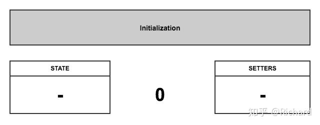
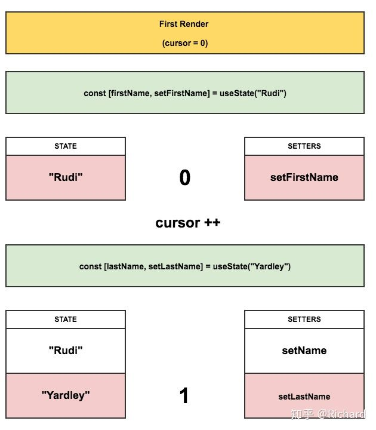
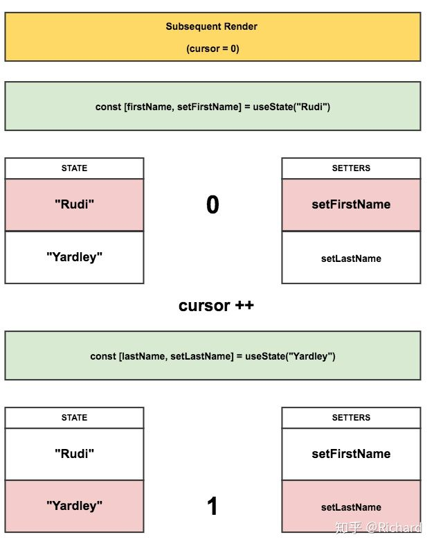
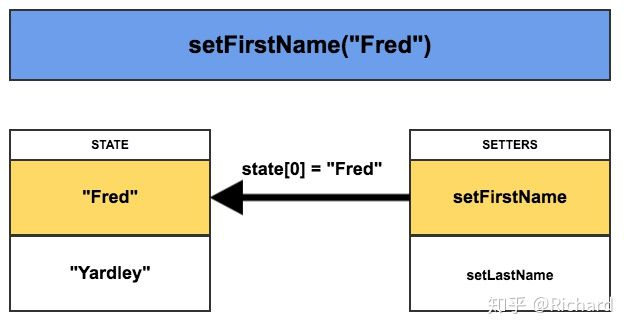

为什么要做
在组件中很难复用逻辑
在平常的开发中，复用逻辑都是通过
provider,consumer,higher-order,renderProps,and other abstractions”
等方式的应用。在hooks中，可以在不改变层级结构的前提下，你可以从组件中提取带状态的逻辑，因此可以更容易测试和复用。
复杂的组件变得很难理解
组件可能在componentdidmount和componentdiddupdate中执行一些数据提取。但是，相同的componentDidMount方法也可能包含一些设置事件侦听器的不相关逻辑，在componentWillUnmount中执行清理。hooks允许您根据相关的部分（例如设置订阅或获取数据）将一个组件拆分为较小的函数。
classes让人和机器变得混淆
在JavaScript中this关键字比较让人迷惑，必须记住bind事件的监听。hooks可以让你在不使用classes的前提下使用更多React的特性。
hooks使用
useState
等效于state用法，简单todoList实现：
1
2
3
4
5
6
7
8
9
10
11
12
13
14
15
16
17
18
19
20
21
22
23
24
25import React, {useState} from 'react';
const TodoList = () => {
const [todo, setTodo] = useState("");
const [todoList, setTodoList] = useState(["test"]);
return (
<div>
{todoList.map((todo) => (
<div>
<div>{todo}</div>
</div>
))}
<input type="text" value={todo} onChange={(event) => {
setTodo(event.target.value);
}}/>
<button onClick={() => {
setTodoList([...todoList, todo]);
setTodo("");
}}>Add Todo
</button>
</div>
);
};
export default TodoList;useState原理
初始化
创建两个数组：state和setters， 光标位置置为0

第一次渲染
调用useState时，第一次渲染，会将一个set函数放入setters数组中，并且把初始state放入到state数组中

后续渲染
每一次重新渲染，光标都会重新设为0，然后从对应的数组中读取状态和set函数

事件处理
每次调用set 函数，set函数将会修改state数组中对应的状态值，这种对应的关系是通过cursor光标来确定的

useEffect
在react类中，通常会在componentdidmount中设置订阅，并在componentwillunmount中清理订阅。这种模式在hoos下面的写法则是这样：
1
2
3
4
5
6
7
8
9
10
11
12
13
14
15
16
17
18
19
20
21
22import React, { useState, useEffect } from "React";
function FriendStatus(props) {
const [isOnline, setIsOnline] = useState(null);
function handleStatusChange(status) {
setIsOnline(status.isOnline);
}
useEffect(() => {
ChatAPI.subscribeToFriendStatus(props.friend.id, handleStatusChange);
// Specify how to clean up after this effect:
return function cleanup() {
ChatAPI.unsubscribeFromFriendStatus(props.friend.id, handleStatusChange);
};
});
if (isOnline === null) {
return "Loading";
}
return isOnline ? "Online" : "Offline";
}useEffect须知：
useEffect方法中return的返回值就是我们在componentWillUnmout中执行的清理方法，也可以不返回。如果有两个方法在不同的生命周期行为不一致，如一个在componentDidMount时运行，另一个则update也要运行，可以使用两次useEffect方法。React按照指定的顺序运行useEffect方法。
useEffect性能优化：
在classes中，通过比较prevProps和provState来解决无用的重复渲染，在useEffect Hook API中则可以将数组作为可选的第二个参数，如：
1
2
3useEffect(() => {
document.title = `You clicked ${count} times`;
}, [count]); // 只当count改变的时候回再次运行这个效果
注意：如果这里给一个空数组，代表effect内部的prop和state的值不会修改，所以不会再次执行，类比componentDidMount和componentWillUnmount。但是这样不安全，因为无法记住effect外部的函数使用了哪些props或者state。因此通常在useEffect里面声明相关的函数，同样可以使用exhaustive-deps来检查。
* **useContext**
1 | const context = useContext(context); |
接收一个context的对象（React.createContext创建的值），并且返回一个由最近的context provider的context value。当Provider更新时，这里的context会变为最新的值。
useReducer
useReducer可以替代setState，如果对redux比较熟悉，则useReducer的用法就比较容易理解。特别是在当有涉及多个子值的复杂状态逻辑，或者下一个状态依赖于前一个状态时。引用官方示例：
1
2
3
4
5
6
7
8
9
10
11
12
13
14
15
16
17
18
19
20
21
22
23const initialState = {count: 0};
function reducer(state, action) {
switch (action.type) {
case 'increment':
return {count: state.count + 1};
case 'decrement':
return {count: state.count - 1};
default:
throw new Error();
}
}
function Counter({initialState}) {
const [state, dispatch] = useReducer(reducer, initialState);
return (
<>
Count: {state.count}
<button onClick={() => dispatch({type: 'increment'})}>+</button>
<button onClick={() => dispatch({type: 'decrement'})}>-</button>
</>
);
}useMemo
用于记录某个函数执行结果后的值，如果该值的依赖参数无变化，则后续返回上一次计算结果。会在渲染阶段执行，所以不要执行和渲染无关的操作，比如副作用方法。如果不提供依赖项，则会在每次渲染的时候执行计算。
useCallback
接收一个回调函数和依赖数组，当依赖数组中的元素发生变化则重新生成新的
function instance，当你把回调函数传递给经过优化的并使用引用相等性去避免非必要渲染的子组件时，它将非常有用。